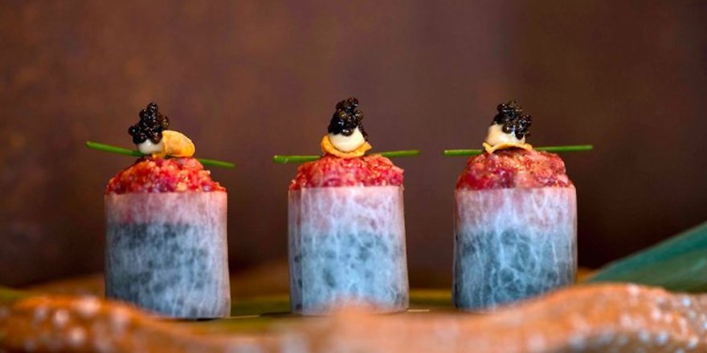
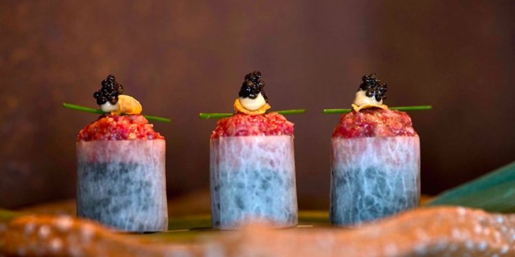
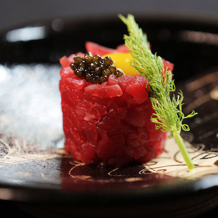
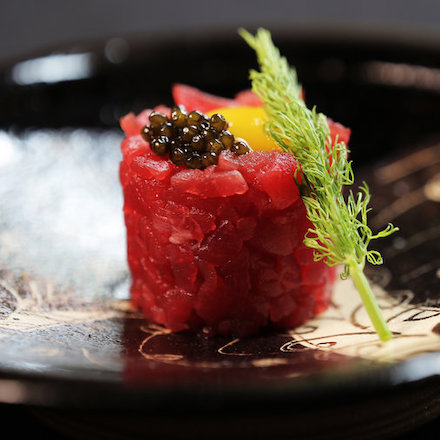

Il ristorante Sushi Sakura nasce nel 1995 dall'idea degli chef di fama internazionale Carlo Pravettoni e Kira Yoshikage, riuscendo con successo a mescolare la tradizione italiana con quella giapponese.
In questo ristorante fusion potete trovare sia i grandi classici della cucina giapponese che le loro rivisitazioni moderne concepite dai nostri chef.


 


 
